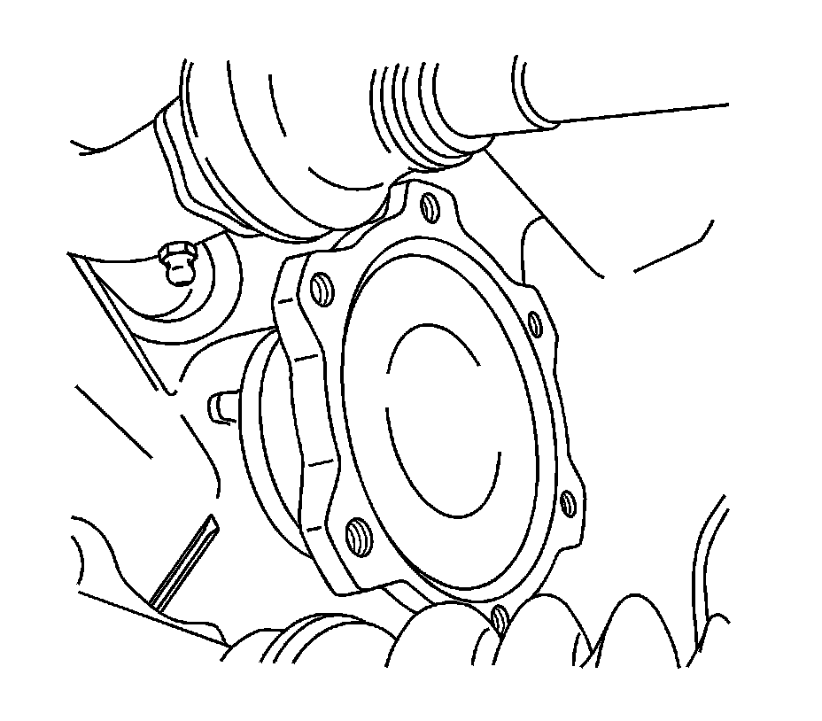

Front Drive Axle Inner Shaft and Inner Shaft Housing Replacement (8.25 F4WD Axle)
Front Drive Axle Inner Shaft and Inner Shaft Housing Replacement (8.25 F4WD Axle)
Removal Procedure
1. Raise the vehicle. Refer to Lifting and Jacking the Vehicle.
2. Drain the differential carrier assembly. Refer to Front Axle Lubricant Replacement.
Important: If only replacing the right side inner shaft and/or housing, follow the steps below. If only replacing the left side inner shaft, proceed to step 13.
3. Remove the front shock absorber.

4. Remove the wheel drive shaft inboard flange bolts from the inner axle shaft.
Important: Support the wheel drive shaft in order to not over flex the constant velocity (CV) joint.
5. Disconnect the wheel drive shaft from the inner axle shaft.
6. Using a hammer and brass drift, disconnect the inner axle shaft from the differential case side gear.

7. Remove the inner axle shaft housing nuts from the bracket.
8. Remove the inner axle shaft housing bolts (2) from the differential carrier assembly.
9. Remove the inner axle shaft (1) and inner axle shaft housing (4) from the vehicle.
10. Remove the inner axle shaft housing gasket (3) from the inner axle shaft housing (4).
11. Remove the inner axle shaft seal and the bearing from the inner axle shaft housing.

12. If only replacing the left side inner axle shaft, perform the following steps:
1. Remove the wheel drive shaft inboard flange bolts from the inner axle shaft.
Disconnect the wheel drive shaft from the inner axle shaft.
2. Support the wheel drive shaft in order to not over flex the CV joint.
3. Remove the inner axle shaft using a hammer and a brass drift.
Installation Procedure

1. If only the left side inner axle shaft was removed, install the shaft by performing the following steps:
1. Install the inner axle shaft into the differential case side gear using a soft-faced mallet until the retaining ring on the inner axle shaft is fully seated within the groove in the differential case side gear. Pull back on the inner axle shaft to ensure that the inner axle shaft is properly retained in the differential case side gear.
2. Connect the wheel drive shaft to the inner axle shaft.
Notice: Refer to Fastener Notice.
3. Install the wheel drive shaft inboard flange to inner axle shaft bolts.
Tighten the wheel drive shaft inboard flange to inner axle shaft bolts to 79 Nm (58 lb ft).
2. If the right side inner axle shaft and/or housing was removed, install the shaft and/or housing following the steps below.
3. Install the new inner axle shaft bearing and the new seal to the inner axle shaft housing.
Important: Do not install the inner axle shaft completely into the inner axle shaft housing at this time.
4. Install the inner axle shaft (1) into the inner axle shaft housing (4).
5. Install the new inner axle shaft housing gasket (3).
6. Install the inner axle shaft (1) and the inner axle shaft housing (4) to the differential carrier assembly.
7. Install the inner axle shaft housing bolts (2).
Tighten the inner axle shaft housing bolts to 40 Nm (30 lb ft).
8. Install the inner axle shaft housing nuts to the bracket.
Tighten the inner axle shaft housing nuts to 100 Nm (75 lb ft).
9. Install the inner axle shaft into the differential case side gear by doing the following:
1. Turn the inner axle shaft and align the splines of the inner axle shaft with the splines on the differential side gear.
2. Install the inner axle shaft into the differential case side gear using a soft-faced mallet until the retaining ring on the inner axle shaft is fully seated within the groove in the differential case side gear.
3. Pull back on the inner axle shaft to ensure that the inner axle shaft is properly retained in the differential case side gear.
10. Install the wheel drive shaft inboard flange to the inner axle shaft.
11. Install the wheel drive shaft inboard flange to inner axle shaft bolts.
Tighten the wheel drive shaft inboard flange to inner axle shaft bolts to 79 Nm (58 lb ft).
12. Install the front shock absorber.
13. With either replacement procedure, fill the differential carrier assembly with axle lubricant. Use the correct fluid. Refer to Front Axle Lubricant Replacement.
Lower the vehicle.